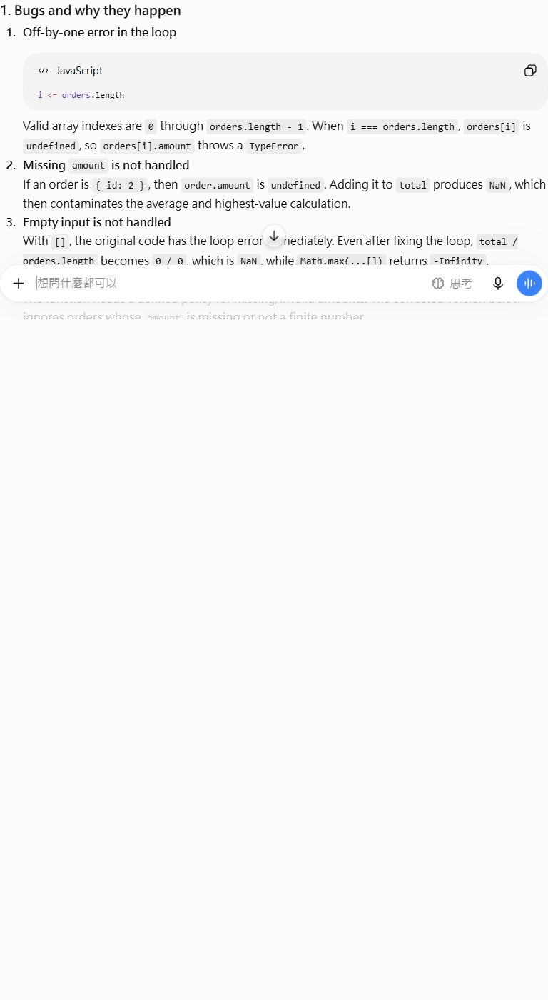

ChatGPT vs Gemini: the same JavaScript bug-fix test
Both tools received the same broken order-summary function. We compared bug detection, corrected code, tests, edge cases, and assumptions.
Result: Both tools found the off-by-one loop, empty-array division, and missing amount contamination. ChatGPT produced the safer return contract for a revenue-related function: null when no valid amounts exist. Gemini was slightly more detailed about floating-point currency precision, but returned 0 for empty or fully invalid data, which can hide a data-quality problem.
Test method
Review the same JavaScript function and return a corrected version with at least four tests.
- Same code sample and prompt in separate new conversations.
- No paid feature, file upload, custom instruction, or follow-up prompt.
- Scored by bug detection, corrected code, test coverage, edge-case semantics, and explanation.
- The editor checked the responses against JavaScript array and number behavior.
The exact prompt
You are a senior JavaScript reviewer. Review the code below.
function summarizeOrders(orders) {
let total = 0;
for (let i = 0; i <= orders.length; i++) {
total += orders[i].amount;
}
return {
total,
average: total / orders.length,
highest: Math.max(...orders.map(order => order.amount))
};
}
Return:
1. Bugs and why they happen
2. Corrected code
3. At least four test cases, including empty input and missing amount
4. The expected output for each test
5. Any assumptions or limitations
Do not use external libraries.What the tools produced
ChatGPT

Gemini
Score
| Tool | Bugs | Code | Tests | Edges | Explanation | Total | Editorial note |
|---|---|---|---|---|---|---|---|
| ChatGPT | 2 | 2 | 2 | 2 | 2 | 10/10 | Used null for average and highest when no valid amounts exist; explicitly avoided Math.max spread limits. |
| Gemini | 2 | 2 | 2 | 1 | 2 | 9/10 | Returned 0 for empty or all-invalid data and added a useful floating-point currency warning. |
What we found
- Both tools correctly identified i <= orders.length as an off-by-one error.
- Both tools detected NaN contamination from missing amounts.
- Both tools found 0 / 0 and Math.max(...[]) problems on empty input.
- ChatGPT's null result is safer for analytics because zero and unknown are different states.
- Gemini's currency precision warning was useful and more explicit than ChatGPT's limitation section.
Verdict
ChatGPT wins narrowly for a revenue-related function because null communicates that no valid amount exists instead of silently returning zero. Gemini is a strong alternative when floating-point currency guidance and strict numeric type checks matter.
Limits
This is a focused single-task test, not a general benchmark of writing quality, reasoning, coding, safety, or long-term reliability. Product interfaces, models, limits, and outputs can change.